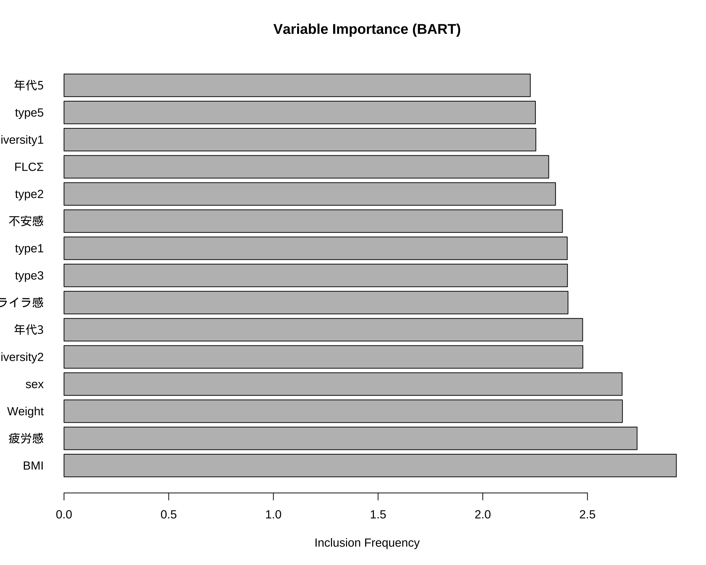
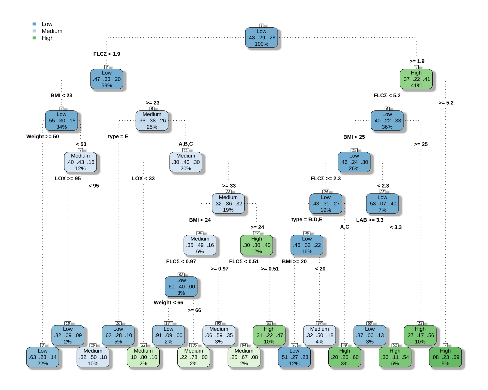
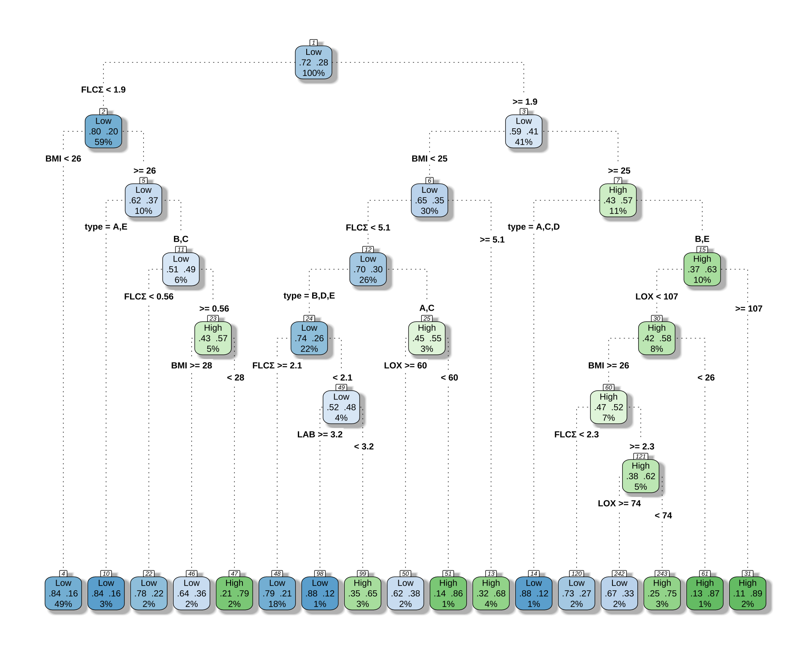
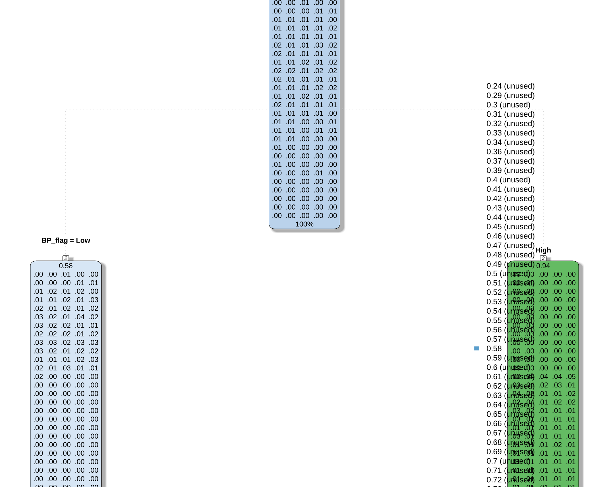
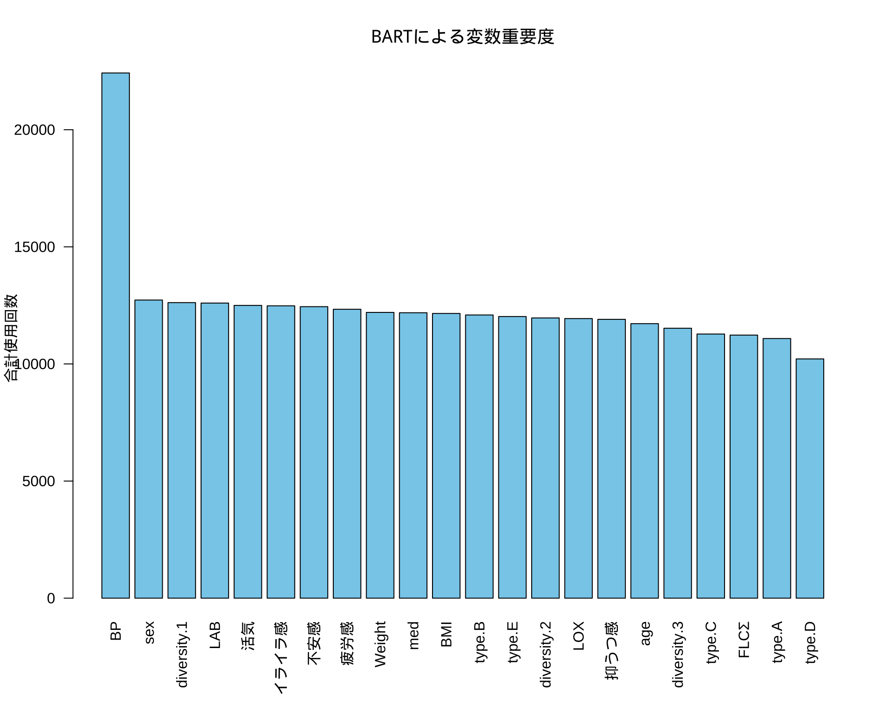
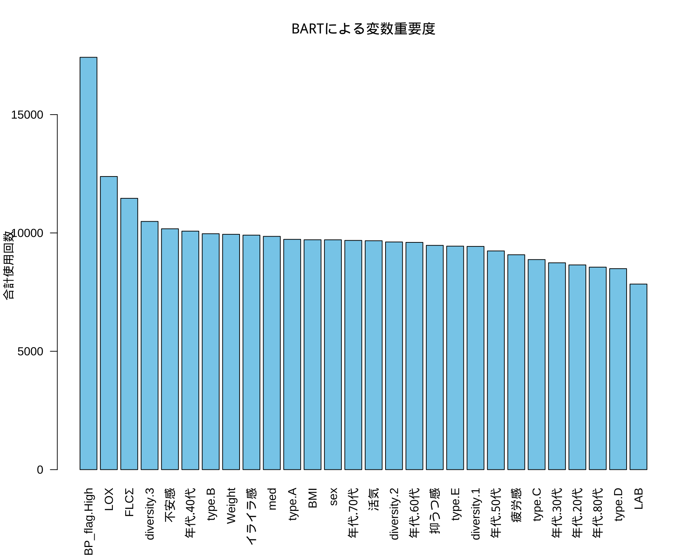

library(readxl)
library(knitr)
df <- readRDS("df.rds")弘前データ５：BART による BP 予測
1 ３カテゴリ BART
1.1 まず３カテゴリでの予測を目指す
library(dplyr)
df$BP_level <- case_when(
df$BP > 0.9 ~ 3,
df$BP > 0.7 & df$BP <= 0.9 ~ 2,
df$BP <= 0.7 ~ 1
) %>%
factor(levels = c(1, 2, 3), labels = c("Low", "Medium", "High"))kable(head(df))| id | age | sex | Weight | BP | FLCΣ | BP備考 | 判別式 | LOX | LAB | LOX_Index | type | diversity | BMI | med | med_col | 年代 | 活気 | イライラ感 | 疲労感 | 不安感 | 抑うつ感 | BP_level |
|---|---|---|---|---|---|---|---|---|---|---|---|---|---|---|---|---|---|---|---|---|---|---|
| 2 | 48 | 2 | 52.7 | 0.47 | 0.81 | B | -3.343 | 75 | 2.2 | 165 | B | 2 | 22.1 | 2 | なし | 40代 | 3 | 3 | 4 | 3 | 3 | Low |
| 3 | 53 | 2 | 64.8 | 0.67 | -0.30 | BDG | -2.727 | 55 | 2.8 | 154 | A | 1 | 26.0 | 2 | なし | 50代 | 4 | 2 | 4 | 3 | 2 | Low |
| 4 | 46 | 1 | 76.3 | 1.10 | 1.95 | NA | -2.974 | 136 | 3.8 | 517 | B | 2 | 26.0 | 2 | NA | 40代 | 2 | 3 | 2 | 3 | 2 | High |
| 5 | 65 | 1 | 72.4 | 0.88 | -8.96 | D | -7.338 | 58 | 2.3 | 133 | C | 2 | 26.2 | 2 | NA | 60代 | 2 | 3 | 1 | 2 | 1 | Medium |
| 6 | 30 | 1 | 59.5 | 0.76 | 0.64 | NA | -2.776 | 46 | 2.2 | 101 | B | 2 | 19.5 | 2 | NA | 30代 | 3 | 5 | 4 | 5 | 4 | Medium |
| 7 | 51 | 1 | 76.6 | 1.69 | 2.58 | NA | -2.377 | 78 | 3.2 | 250 | B | 2 | 25.5 | 2 | NA | 50代 | 3 | 3 | 3 | 3 | 2 | High |
1.2 BART モデル
備考は全て外し，LOX_Index と 判別式 も説明変数としては考慮しない．
df_filtered <- df %>%
filter(is.na(BP備考)) %>%
select(-c(BP備考, LOX_Index, 判別式, id, med_col, age))library(BART)
# 説明変数と被説明変数を準備
x_vars <- df_filtered[, !(names(df_filtered) %in% c("BP", "BP_level"))]
y_var <- df_filtered$BP_level
# 欠損値を含む行を削除
complete_cases <- complete.cases(x_vars, y_var)
x_vars_clean <- x_vars[complete_cases, ]
y_var_clean <- y_var[complete_cases]
# x を必ず base::data.frame に
x_train <- as.data.frame(x_vars_clean) # tibble/data.table/sparse -> NG なので明示変換
# y は 1..K の整数
y <- droplevels(y_var_clean) # L/M/H
K <- nlevels(y)
y_int <- as.integer(y)fit <- BART::mbart(
x.train = x_train,
y.train = y_int,
x.test = x_train, # 例として同データで
type = "lbart" # or "pbart"
)fit <- readRDS("bart_fit.rds")
# 予測と混同行列
p <- matrix(fit$prob.test.mean, ncol = K, byrow = TRUE)
pred <- factor(levels(y)[max.col(p)], levels = levels(y))
table(truth = y, pred = pred) pred
truth Low Medium High
Low 202 16 21
Medium 80 41 33
High 58 17 781.3 変数重要度の出力
library(showtext)Loading required package: sysfontsLoading required package: showtextdb# font_add("HiraKakuPro-W3", "/System/Library/Fonts/ヒラギノ角ゴ Pro W3.otf") # macOS
showtext_auto()# 変数重要度を計算・描画
# fit$varcount に各変数が使用された回数の情報が入っている
var_counts_list <- fit$varcount # リスト形式
var_counts_combined <- (var_counts_list[[1]] + var_counts_list[[2]]) / 2 # 2カテゴリの平均
var_counts <- colMeans(var_counts_combined) # MCMCの全ステップで平均
var_counts_sorted <- sort(var_counts, decreasing = TRUE)
# 上位15件などをプロット
barplot(head(var_counts_sorted, 15),
horiz = TRUE,
las = 1, # y軸ラベルを水平に
main = "Variable Importance (BART)",
xlab = "Inclusion Frequency")
1.4 カテゴリごとの重要度
# カテゴリごとの変数重要度
var_counts_cat1 <- colMeans(var_counts_list[[1]]) # Low vs その他
var_counts_cat2 <- colMeans(var_counts_list[[2]]) # Medium vs その他
# 比較
comparison_df <- data.frame(
Variable = names(var_counts_cat1),
Category1 = var_counts_cat1,
Category2 = var_counts_cat2,
Overall = var_counts
)
# 上位10件を表示
head(comparison_df[order(comparison_df$Overall, decreasing = TRUE), ], 10) Variable Category1 Category2 Overall
BMI BMI 2.854 2.995 2.9245
疲労感 疲労感 3.047 2.427 2.7370
Weight Weight 3.373 1.961 2.6670
sex sex 2.411 2.920 2.6655
diversity2 diversity2 2.369 2.587 2.4780
年代3 年代3 2.699 2.255 2.4770
イライラ感 イライラ感 2.826 1.988 2.4070
type3 type3 2.175 2.634 2.4045
type1 type1 2.637 2.170 2.4035
不安感 不安感 2.551 2.210 2.38052 ３カテゴリ CART
library(rpart)
library(rpart.plot)
df_filtered <- df %>%
filter(is.na(BP備考)) %>%
select(-c(BP備考, LOX_Index, 判別式, id, med_col, age, BP))
# df_filtered からモデルを構築
# BP_level ~ . は、「BP_level を他の全ての変数で説明する」という意味
cart_model <- rpart(
BP_level ~ .,
data = df_filtered,
method = "class" # 分類問題なので "class" を指定
)
# 結果の要約を表示
printcp(cart_model)
Classification tree:
rpart(formula = BP_level ~ ., data = df_filtered, method = "class")
Variables actually used in tree construction:
[1] BMI FLCΣ LAB LOX type Weight
Root node error: 329/576 = 0.57118
n=576 (8 observations deleted due to missingness)
CP nsplit rel error xerror xstd
1 0.033435 0 1.00000 1.00000 0.036103
2 0.018237 3 0.89970 0.99696 0.036121
3 0.015198 5 0.86322 1.03343 0.035875
4 0.014184 7 0.83283 1.03647 0.035851
5 0.013678 10 0.79027 1.03647 0.035851
6 0.011145 12 0.76292 1.02128 0.035964
7 0.010000 16 0.71733 1.01520 0.036006# 決定木を可視化
rpart.plot(
cart_model,
type = 4, # ノードの表示スタイル
extra = 104, # 各ノードに所属するクラスの割合を表示 (例: L/M/H -> 239/12/0)
box.palette = "BuGn", # カラーパレット
branch.lty = 3, # 枝の線の種類
shadow.col = "gray", # 影の色
nn = TRUE # ノード番号を表示
)
3 ２カテゴリ CART
７割しか予測できないのか．
library(rpart)
library(rpart.plot)
df$BP_flag <- case_when(
df$BP > 0.9 ~ 2,
df$BP <= 0.9 ~ 1
) %>%
factor(levels = c(1, 2), labels = c("Low", "High"))
df_filtered <- df %>%
filter(is.na(BP備考)) %>%
select(-c(BP備考, LOX_Index, 判別式, id, med_col, 年代, BP, BP_level))
# df_filtered からモデルを構築
# BP_level ~ . は、「BP_level を他の全ての変数で説明する」という意味
cart_model <- rpart(
BP_flag ~ .,
data = df_filtered,
method = "class" # 分類問題なので "class" を指定
)
# 結果の要約を表示
printcp(cart_model)
Classification tree:
rpart(formula = BP_flag ~ ., data = df_filtered, method = "class")
Variables actually used in tree construction:
[1] BMI FLCΣ LAB LOX type
Root node error: 164/576 = 0.28472
n=576 (8 observations deleted due to missingness)
CP nsplit rel error xerror xstd
1 0.027439 0 1.00000 1.0000 0.066041
2 0.015244 4 0.85976 1.0793 0.067518
3 0.012195 8 0.79878 1.0732 0.067411
4 0.010163 12 0.75000 1.1341 0.068428
5 0.010000 16 0.70122 1.1585 0.068804# 決定木を可視化
rpart.plot(
cart_model,
type = 4, # ノードの表示スタイル
extra = 104, # 各ノードに所属するクラスの割合を表示 (例: L/M/H -> 239/12/0)
box.palette = "BuGn", # カラーパレット
branch.lty = 3, # 枝の線の種類
shadow.col = "gray", # 影の色
nn = TRUE # ノード番号を表示
)
4 連続応答 CART
library(rpart)
library(rpart.plot)
df_filtered <- df %>%
filter(is.na(BP備考)) %>%
select(-c(BP備考, LOX_Index, 判別式, id, med_col, 年代, BP_level))
# df_filtered からモデルを構築
# BP_level ~ . は、「BP_level を他の全ての変数で説明する」という意味
cart_model <- rpart(
BP ~ .,
data = df_filtered,
method = "class" # 分類問題なので "class" を指定
)
# 結果の要約を表示
printcp(cart_model)
Classification tree:
rpart(formula = BP ~ ., data = df_filtered, method = "class")
Variables actually used in tree construction:
[1] BP_flag
Root node error: 561/576 = 0.97396
n=576 (8 observations deleted due to missingness)
CP nsplit rel error xerror xstd
1 0.01426 0 1.00000 1.0160 0.0043435
2 0.01000 1 0.98574 1.0125 0.0050066# 決定木を可視化
rpart.plot(
cart_model,
type = 4, # ノードの表示スタイル
extra = 104, # 各ノードに所属するクラスの割合を表示 (例: L/M/H -> 239/12/0)
box.palette = "BuGn", # カラーパレット
branch.lty = 3, # 枝の線の種類
shadow.col = "gray", # 影の色
nn = TRUE # ノード番号を表示
)
5 ２カテゴリ BART
library(dbarts)
# 説明変数と被説明変数を準備
x_vars <- df_filtered[, !(names(df_filtered) %in% "BP_flag")]
y_var <- df_filtered$BP_flag
# 欠損値を含む行を削除
complete_cases <- complete.cases(x_vars, y_var)
x_vars_clean <- x_vars[complete_cases, ]
y_var_clean <- y_var[complete_cases]
# BARTモデルの実行
bart_model <- bart(
x.train = x_vars_clean,
y.train = y_var_clean
)# 学習データの予測確率（P(Y=1|x)）
p_train <- fitted(bart_model) # バイナリは確率スケールで返る
pred_train <- as.integer(p_train >= 0.5) # 0.5 しきい値（慣例）
y_bin <- ifelse(y_var_clean == "High", 1, 0)
# 精度と混同行列
mean(pred_train == y_bin)[1] 0.989011table(truth = y_bin, pred = pred_train) pred
truth 0 1
0 393 0
1 6 147正答率は 75% まで上がる．
5.1 変数重要度
# 1. 変数ごと（列ごと）に使用回数を合計する
# colSums() を使って、1000回のMCMCステップでのカウントを各変数について合計します。
var_importance_scores <- colSums(bart_model$varcount)
# 2. 結果を重要度の降順でソートする
sorted_importance <- sort(var_importance_scores, decreasing = TRUE)
# ソートされた結果の確認
print(sorted_importance) BP sex diversity.1 LAB 活気 イライラ感
22422 12728 12618 12599 12499 12482
不安感 疲労感 Weight med BMI type.B
12445 12334 12200 12186 12155 12090
type.E diversity.2 LOX 抑うつ感 age diversity.3
12024 11964 11937 11904 11720 11524
type.C FLCΣ type.A type.D
11277 11232 11085 10214 # 3. barplot() を使ってプロットする (より見やすいプロット)
# barplot() の方がこの種のデータには適しています。
# las=2 は、変数名が重ならないように軸ラベルを垂直にします。
par(mar = c(6, 4, 4, 2) + 0.1) # 下側のマージンを広げてラベルを表示
barplot(sorted_importance,
las = 2,
main = "BARTによる変数重要度",
ylab = "合計使用回数",
xlab = "",
col = "skyblue")
6 BP 値予測
6.1 モデル構築
df_filtered <- df %>%
filter(is.na(BP備考)) %>%
select(-c(BP備考, LOX_Index, 判別式, id, med_col, age, BP_level))library(dbarts)
# 説明変数と被説明変数を準備
x_vars <- df_filtered[, !(names(df_filtered) %in% "BP")]
y_var <- df_filtered$BP
# 欠損値を含む行を削除
complete_cases <- complete.cases(x_vars, y_var)
x_vars_clean <- x_vars[complete_cases, ]
y_var_clean <- y_var[complete_cases]
# BARTモデルの実行
bart_model <- bart(
x.train = x_vars_clean,
y.train = y_var_clean
)summary(bart_model) Length Class Mode
call 3 -none- call
first.sigma 100 -none- numeric
sigma 1000 -none- numeric
sigest 1 -none- numeric
yhat.train 546000 -none- numeric
yhat.train.mean 546 -none- numeric
yhat.test 0 -none- NULL
yhat.test.mean 0 -none- NULL
varcount 28000 -none- numeric
y 546 -none- numeric
n.chains 1 -none- numeric6.2 変数選択
# 1. 変数ごと（列ごと）に使用回数を合計する
# colSums() を使って、1000回のMCMCステップでのカウントを各変数について合計します。
var_importance_scores <- colSums(bart_model$varcount)
# 2. 結果を重要度の降順でソートする
sorted_importance <- sort(var_importance_scores, decreasing = TRUE)
# ソートされた結果の確認
print(sorted_importance)BP_flag.High LOX FLCΣ diversity.3 不安感 年代.40代
17421 12385 11463 10486 10176 10076
type.B Weight イライラ感 med type.A BMI
9967 9942 9907 9855 9729 9712
sex 年代.70代 活気 diversity.2 年代.60代 抑うつ感
9710 9684 9671 9619 9601 9475
type.E diversity.1 年代.50代 疲労感 type.C 年代.30代
9442 9431 9240 9078 8875 8738
年代.20代 年代.80代 type.D LAB
8649 8555 8492 7840 # 3. barplot() を使ってプロットする (より見やすいプロット)
# barplot() の方がこの種のデータには適しています。
# las=2 は、変数名が重ならないように軸ラベルを垂直にします。
par(mar = c(6, 4, 4, 2) + 0.1) # 下側のマージンを広げてラベルを表示
barplot(sorted_importance,
las = 2,
main = "BARTによる変数重要度",
ylab = "合計使用回数",
xlab = "",
col = "skyblue")